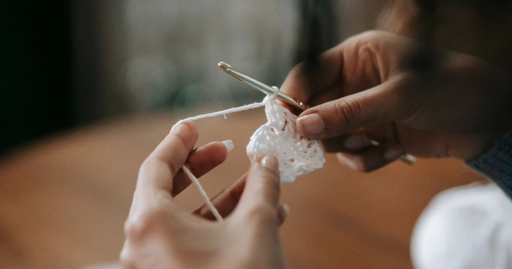

Tools, Yarn & Materials · Beginner guide
Best Crochet Tools for Beginners: What You Actually Need
Start with a hook, yarn, and pattern; add crochet tools only when a specific task calls for them.

A beginner does not need a large kit for a first swatch. The useful tools are those named in the pattern or that solve a real reading or finishing need.
Before you begin
Check the materials list. A yarn needle helps with ends, scissors cut yarn, and markers can identify a repeat or row edge.
Step-by-step instructions
- Gather the hook and yarn specified by the pattern, plus scissors and a way to secure loose ends.
- Add a measuring tape when the pattern gives dimensions or gauge.
- Use removable markers if you lose the first stitch, track a repeat, or mark a round start.
- Wait to buy specialty tools until a project or technique requires them.
What to check
Buy against a real task
If unsure whether a tool is necessary, check the pattern’s materials and instructions. Use a substitute only when it will not change the technique or damage the work.
Frequently asked questions
Do beginners need a stitch counter?
No. A written tally, row marker, or counter can all work. Use what makes your pattern easier to track.
Is a yarn needle essential?
It is useful for tails and assembly. Choose a blunt tip and an eye that fits your yarn.
Do I need a row counter?
No. A pencil tally or note in the pattern can work just as well. Use a counter if it helps you track the project.
Match each tool to a step
A crochet hook and yarn are the core supplies named by most patterns. Scissors help cut yarn; a blunt tapestry needle can weave in tails or join pieces; a removable marker can identify a stitch, round start, or repeat. A ruler or tape measure helps when the pattern gives dimensions or gauge. You do not need every tool at once: check the pattern’s materials list and add a tool only when it supports a step you will actually do.
Use simple substitutes where they are safe
A contrasting piece of smooth scrap yarn can mark a stitch if it can be removed without splitting or snagging the work. A written tally can replace a counter. But not every substitute is suitable: sharp household scissors should be handled carefully, and a needle must fit through the yarn and stitch path without forcing it. Follow the pattern when a specific tool or method is required, especially for shaping or finishing.
Separate the starter tools from optional extras
A practical starter set is the hook and yarn in the pattern, scissors, and a needle suitable for securing tails. A stitch marker and measuring tape help with specific tasks such as locating a round start or checking gauge. A counter, blocking mats, specialty joins, and organizers may be useful later, but they are not required for every first project. Use a tool when it solves a step in the instructions. This keeps the setup simple and helps you learn which supplies you actually reach for.
Choose storage and counting tools for the task
A row counter helps when a pattern has many rounds, but a pencil mark can track the same information. A tape measure is useful when the instructions give dimensions, while stitch markers can hold a place in a repeat or identify the start of a round. These tools support the instructions; they do not replace reading the pattern’s count. Choose tools that are easy to handle and remove, and keep them near the project. If you do not need a tool for the current project, there is no need to buy it just because it appears on a general kit list.
Common mistakes and how to fix them
- Buying specialty tools before choosing a project. Check the pattern’s materials list first; many accessories are optional.
- Using a marker that damages or catches yarn. Choose a removable marker that opens and closes without snagging.
- Trying to weave thick yarn with a needle that is too small. Match the needle eye and blunt tip to the yarn and fabric.
Tips that make it easier
- Start with the tools listed in the pattern plus scissors and a suitable yarn needle.
- Use a written tally if you do not own a counter.
- Store small notions with the active project so they do not get mixed up.
A useful next step
Check the pattern and label together, then use a sample to confirm how the materials behave before starting the full project.